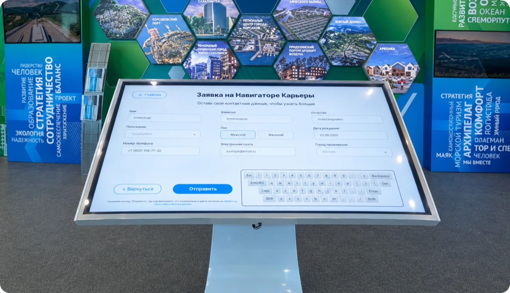
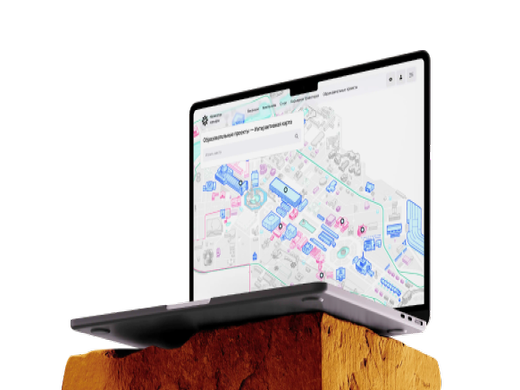

Карьерная платформа для Сахалинской области

Региональная карьерная платформа Сахалинской области: от первой гипотезы до продукта для 20 000+ пользователей и 500+ работодателей. За четыре года я прошёл путь от единственного дизайнера в команде из 5 человек до лида дизайна в команде из 17.
О чём продукт
Проект стартовал фактически с нуля: не было продуктовой модели, сценариев и понимания, каким должен стать продукт. Платформа несколько раз меняла масштаб и аудиторию, и каждый раз приходилось пересобирать архитектуру, а не просто дорисовывать экраны.
Моя роль выходила за рамки макетов. Я формулировал требования, когда ожидания менялись по ходу разработки, помогал структурировать видение продукта и искал баланс между желаниями руководства, сложностью реализации и реальными болями пользователей.
От гипотезы к MVP
Всё началось с идеи «Заявки на специалиста»: работодатель описывает нужного сотрудника через цепочку, а организация получает готовый план обучения под этот запрос.
А организация уже получала готовый план обучения.

Затем продукт расширили до MVP job-сервиса с двумя ролями, соискателем и работодателем. Я спроектировал вакансии и отклики, анкеты и профили компаний, избранное, сообщения и агрегатор образовательных курсов.
Перед этим провёл бенчмарк hh.ru, rabota.ru, «Работы в России», SuperJob, Хабр Карьеры и локальных досок Сахалина и свёл функциональность в сравнительную таблицу по ключевым сценариям.

Карьерный трек и админ-панель
С переходом проекта в АРЧК идеология сменилась: сервис должен не агрегировать вакансии, а сопровождать человека на разных этапах профессионального развития. Процесс стал продуктовым: гипотезы, исследование, приоритизация.

Параллельно я спроектировал админ-панель для всех сущностей платформы, и команда получила возможность управлять контентом без разработки:
Конструктор форм
Самая сложная задача админки. Администраторы хотели размещать опросы и формы на любой странице, не заказывая каждый раз новый интерфейс. Я спроектировал конструктор: формы под конкретную роль, сборка из базовых типов полей, гибкая структура вопросов.
Результат:
Админы собрали 20+ форм без разработчиков.
Раньше одна форма занимала 3–5 дней разработки.
Редизайн и UI-кит
После смены руководства аудитория расширилась на студентов и школьников, и сайту понадобился новый, более молодой визуальный язык. Я сделал несколько концептов первого экрана, руководство выбрало направление.

После согласования нового дизайна я настоял на том, чтобы не просто перерисовать интерфейсы, а заложить время и ресурсы на создание полноценного UI-кита: с компонентной базой, системой отступов, токенами, под светлую и тёмную тему.
Его собирали вместе с тремя джунами, которых я обучил на проекте. Параллельно с фронтендом собрали Storybook.
Результат:
Дизайн и вёрстка перестали расходиться, а сборка интерфейса сократилась с нескольких дней или недели до 1–2 дней.
Интерактивная карта на ВДНХ
Когда у проекта появились павильоны на ВДНХ, мы запустили раздел с интерактивной картой павильонов: компании и события в каждом.

Сенсорные стенды в павильонах
Регистрацию и ключевые страницы адаптировали под сенсорные экраны в павильонах, а на стенде стояла форма быстрой регистрации.
Результат:
10 000+ регистраций через стенды.

Выставка проходила с ноября 2023 года по апрель 2024 года
Как я вёл команду
Это был мой первый опыт управления, и я выстраивал процессы по ходу:
Если человек не мог прийти, писал апдейт в чат. В рабочем канале команды были разделы для дейли, полезных материалов, референсов и доступов.
Рисовали концепты вне рамок проекта, чтобы прокачивать насмотренность и не выгорать на рутине.
Собирал, что команде мешает, и сам относил это руководству, чтобы менять процессы.
Был точкой проверки для повышения джунов.
Результаты
Ошибка, которую я признаю:
Долгое время я делал дизайн-ревью «между делом». Когда горели сроки, его пропускали, расхождения с продом копились, и я закрывал их точечными UI-багами. Вывод: ревью должно быть обязательным этапом процесса. Его я внедрил уже на следующем проекте (см. Education EcoSystem).

Чему научился:
Лидерство - отдельный навык, с ним не рождаются. Мне очень помог опыт преподавателя в колледже: там я прокачал коммуникацию и публичные выступления, и они пригодились и в работе с командой, и в защите решений перед руководством.
20 000+ пользователей
зарегистрировано на платформе
с начала работы

500+ компаний*
разместили 2000+ вакансий
3 junior-дизайнера
обучил на проекте
300+ уникальных страниц
спроектировано в Figma